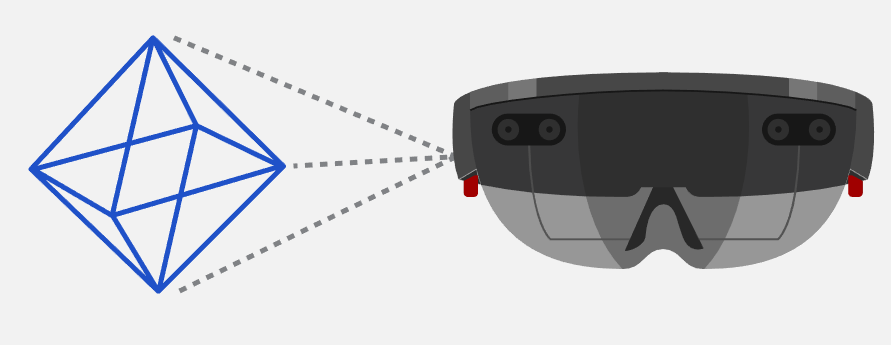
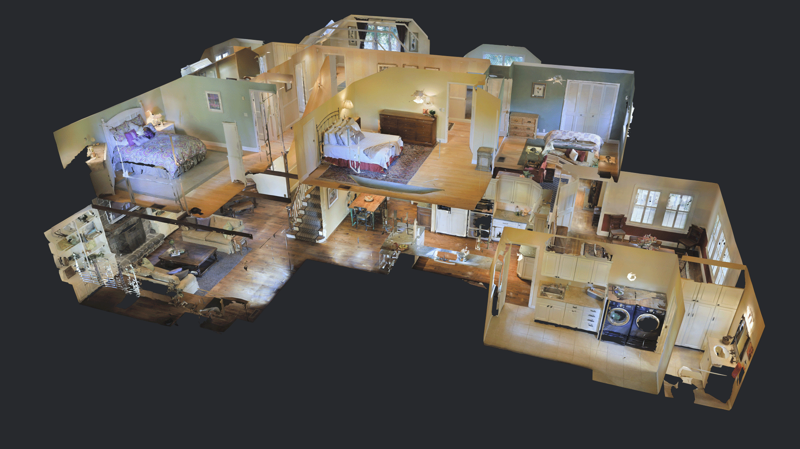

Dr. Damian Hills
• No large IDE required for development, just a browser and text editor
• Use tools web developers know - javascript, HTML
• Desktop/Mobile Progressive Web Apps (PWA)
• Cross platform
XR: The term XR has been referred as Cross Reality or eXtended Reality but the X has been mostly used as a flexible placeholder for different types of immersive technologies.
WebXR was created to target a wider range of immersive devices beyond just VR. Including AR devices such as phones, Microsoft HoloLens and Magic Leap One (or any device that supports the standard)
...is a design philosophy that centers around providing a baseline of essential content and functionality to as many users as possible, while at the same time going further and delivering the best possible experience only to users of the most modern browsers that can run all the required code.
..using its inbuilt Edge browser and now Firefox Reality Browser
..also has strong support for WebVR (Go, Quest)
"Magic Leap is committed to ongoing support of open web standards and collaboration with the web community."
..can also build hybrid apps from webXR
..webXR demo
..webXR demo
..developed in aframe, WebXR beat saber
..portfolio agency
...tourism
..uses webVR to display scanned 3D
...open sourced game engine developed by Microsoft
...webGL game engine
three.js - GPU shaders
•Learn some aframe
•Learn to use glitch.me to edit aframe
• Learn how to prepare 3D files for web (GLTF/GLB)
• Develop an online portfolio (for your 360,sketchfab and terrain)
...good source of GLTF files